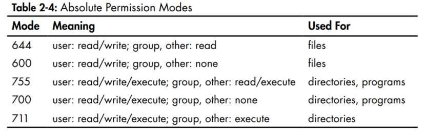
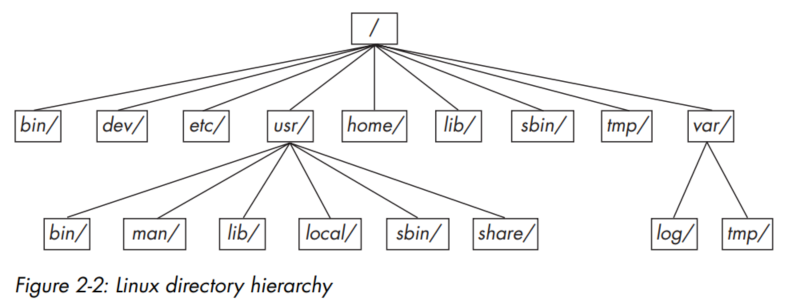

This page contains my notes from the following books:
a) How Linux Works by Brian Ward
b) The Linux Command Line by William E. Shotts, Jr.
a) How Linux Works by Brian Ward
b) The Linux Command Line by William E. Shotts, Jr.
Index for Book:
Chapter 0 - Interesting Links
Chapter 1 - The Big Picture
Chapter 2 - Basic Commands and Directory Hierarchy
Chapter 3 - Devices
Chapter 4 - Disks and FileSystems
Interesting Links
Links
-
Stuff
- Commands in this book will typically look like this:
- Linux is a Unix flavor at heart. You'll see the word Unix in some chapters more than Linux because you can take what you learn straight over to Solaris, BSD, and other Unix-flavored systems. For more details about Unix for beginners than you'll find here, consider reading The Linux Command Line (No Starch Press, 2012), UNIX for the Impatient (Addison-Wesley Professional, 1995), and Learning the UNIX Operating System, 5th edition (O'Reilly, 2001).
- Pressing ctrl-D on an empty line stops the current standard input entry from the terminal (and often terminates a program). Don't confuse this with ctrl-c, which terminates a program regardless of its input or output.
- You will often see control characters marked with a caret; for example, ^C for ctrl-c.
- Mastering Regular Expressions, 3rd edition (O'Reilly, 2006)
- You can search through the previous commands using:
- Filenames and commands in Linux, as in Unix, are case sensitive. The filenames File1 and file1 refer to different files.
- Commands are often followed by one or more options that modify their behavior, and further, by one or more argument, the items upon which the command acts. So most commands look something like this:
- One of the common ideas in Unix like operating systems such as Linux is that "everything is a file".
$ ls/. You are supposed to enter the text in bold. The $ is the prompt for
your regular user account. If you see a # as a prompt, you should be superuser. - Linux is a Unix flavor at heart. You'll see the word Unix in some chapters more than Linux because you can take what you learn straight over to Solaris, BSD, and other Unix-flavored systems. For more details about Unix for beginners than you'll find here, consider reading The Linux Command Line (No Starch Press, 2012), UNIX for the Impatient (Addison-Wesley Professional, 1995), and Learning the UNIX Operating System, 5th edition (O'Reilly, 2001).
- Pressing ctrl-D on an empty line stops the current standard input entry from the terminal (and often terminates a program). Don't confuse this with ctrl-c, which terminates a program regardless of its input or output.
- You will often see control characters marked with a caret; for example, ^C for ctrl-c.
- Mastering Regular Expressions, 3rd edition (O'Reilly, 2006)
- You can search through the previous commands using:
Ctrl + r. Then you can cycle between the different commands by pressing Ctrl + r again. - Filenames and commands in Linux, as in Unix, are case sensitive. The filenames File1 and file1 refer to different files.
- Commands are often followed by one or more options that modify their behavior, and further, by one or more argument, the items upon which the command acts. So most commands look something like this:
command -options arguments. Most commands use options consisting of a single option preceded by a - . For
instance, ls -l. But many commands also support long options, which are entire words that are preceded by two dashes instead of just one. For instance,
the long option version of ls -a would be ls --all. Also, many commands allow short options to be strung together. For instance, you can run
ls -lt, where l would give you the long form output, and t would sort the output by the modified date of the file. You can combine the
long and the short forms together as well. For instance, ls -lt --reverse would reverse the sorting order. - One of the common ideas in Unix like operating systems such as Linux is that "everything is a file".
Chapter 1: The Big Picture
Levels and layers of abstraction in a linux system
- A layer or level is a classification (or grouping) of a component according to where that component sits between the user and the hardware. A linux system has
three main levels. Hardware at the base consists of the memory and the CPUs. Disks and network interfaces also form a part of this level. The kernel is the core
of the OS. This is the software residing in the memory that tells the CPU what to do. The kernel manages the hardware and acts as the interface between the hardware and any
running programs. Processes are the running programs that the kernel manages. These are more specifically referred to as user processes, regardless of whether
the user directly interacts with them or not.
- There is a critical difference between the way that the kernel and the user processes run. The kernel runs in the kernel mode whereas the user processes run in the
user mode. Code running in the kernel mode has unrestricted access to the processors and the main memory. The area that only the kernel can access is known as the kernel
space. User space on the other hand restricts access to a much smaller subset of the memory and safe CPU operations. User Space refers to the parts of the main
memory that the user processes can access. This segregation means that if a process makes a mistake and crashes, the consequences are limited and can be cleaned up by the
kernel. So your web browser crashing does not also end up crashing your text editor. But do note that depending on the permissions that you allow a particular process to
have, the impact might be greater.
Show Image 
Hardware: Understanding Main Memory
- The running kernel and processes reside in the main memory. At its most basic level, the main memory is just a collection of bits. The CPU operates on the contents of the
main memory. It reads instructions and data from it, and writes the results of the computation back to the main memory.
- State of a memory is a specific arrangement of the 0's and 1's present in the memory. This is also called an image.
- State of a memory is a specific arrangement of the 0's and 1's present in the memory. This is also called an image.
Tasks of the Kernel
- One of the kernel's tasks is to split memory into many subdivisions, and it must maintain certain state information about those subdivisions at all times. Each process gets
its own share of memory, and the kernel must ensure that each process keeps to its share.
- The kernel is in charge of managing tasks in four general system areas:
a) Processes: the kernel is responsible for determining which processes are allowed to use the CPU
b) Memory: the kernel is required to keep track of all memory - what is currently allocated to a particular process, what might be shared between processes, and what is free.
c) Device Drivers: the kernel acts as an interface between the hardware (such as a disk) and processes. It's usually the kernel's job to operate the hardware.
d) System calls and support: Processes normally use system calls to communicate with the kernel.
- We will be looking at each of these functions.
- The kernel is in charge of managing tasks in four general system areas:
a) Processes: the kernel is responsible for determining which processes are allowed to use the CPU
b) Memory: the kernel is required to keep track of all memory - what is currently allocated to a particular process, what might be shared between processes, and what is free.
c) Device Drivers: the kernel acts as an interface between the hardware (such as a disk) and processes. It's usually the kernel's job to operate the hardware.
d) System calls and support: Processes normally use system calls to communicate with the kernel.
- We will be looking at each of these functions.
Kernel task: Process Management
- Process management describes the starting, pausing, resuming, and terminating of processes.
- How do processes run? Consider a system with a one-core CPU. Many processes may be able to use the CPU, but only one process may actually use the CPU at any given time. In practice, each process uses the CPU for a small fraction of a second, then pauses; then another process uses the CPU for another small fraction of a second; then another process takes a turn, and so on. Each piece of time (called a time slice) gives a process enough time for significant computation. The act of one process giving up control of the CPU to another process is called a context switch.
- It is the kernel that is responsible for context-switching.
- This is what happens when a process is running in user-mode, and its time slice is up:
a) The CPU (the actual hardware) interrupts the current process based on an internal timer, switches into kernel mode, and hands control back to the kernel.
b) The kernel records the current state of the CPU and memory, which will be essential to resuming the process that was just interrupted.
c) The kernel performs any tasks that might have come up during the preceding time slice (such as collecting data from input and output, or I/O, operations).
d) The kernel is now ready to let another process run. The kernel analyzes the list of processes that are ready to run and chooses one.
e) The kernel prepares the memory for this new process, and then prepares the CPU.
f) The kernel tells the CPU how long the time slice for the new process will last.
g) The kernel switches the CPU into user mode and hands control of the CPU to the process.
- This context switch answers the question of "when does the kernel run?". The kernel runs between process time slices during a context switch.
- How do processes run? Consider a system with a one-core CPU. Many processes may be able to use the CPU, but only one process may actually use the CPU at any given time. In practice, each process uses the CPU for a small fraction of a second, then pauses; then another process uses the CPU for another small fraction of a second; then another process takes a turn, and so on. Each piece of time (called a time slice) gives a process enough time for significant computation. The act of one process giving up control of the CPU to another process is called a context switch.
- It is the kernel that is responsible for context-switching.
- This is what happens when a process is running in user-mode, and its time slice is up:
a) The CPU (the actual hardware) interrupts the current process based on an internal timer, switches into kernel mode, and hands control back to the kernel.
b) The kernel records the current state of the CPU and memory, which will be essential to resuming the process that was just interrupted.
c) The kernel performs any tasks that might have come up during the preceding time slice (such as collecting data from input and output, or I/O, operations).
d) The kernel is now ready to let another process run. The kernel analyzes the list of processes that are ready to run and chooses one.
e) The kernel prepares the memory for this new process, and then prepares the CPU.
f) The kernel tells the CPU how long the time slice for the new process will last.
g) The kernel switches the CPU into user mode and hands control of the CPU to the process.
- This context switch answers the question of "when does the kernel run?". The kernel runs between process time slices during a context switch.
Kernel task: Memory Management
- The kernel must manage memory when there is context switch. This is complicated because the following conditions must hold:
a) The kernel must have its own private area in memory that user processes can't access.
b) Each user process needs its own section of memory.
c) One user process may not access the private memory of another process.
d) User processes can share memory.
e) Some memory in user processes can be read-only.
f) The system can use more memory than is physically present by using disk space as auxiliary.
- Modern CPUs include a memory management unit (MMU) that enables a memory access scheme called virtual memory. When using virtual memory, a process does not directly access the memory by its physical location in the hardware. Instead, the kernel sets up each process to act as if it had an entire machine to itself. When the process accesses some of its memory, the MMU intercepts the access and uses a memory address map to translate the memory location from the process into an actual physical memory location on the machine. The kernel must still initialize and continuously maintain and alter this memory address map. For example, during a context switch, the kernel has to change the map from the outgoing process to the incoming process.
- The implementation of a memory address map is called a page table.
a) The kernel must have its own private area in memory that user processes can't access.
b) Each user process needs its own section of memory.
c) One user process may not access the private memory of another process.
d) User processes can share memory.
e) Some memory in user processes can be read-only.
f) The system can use more memory than is physically present by using disk space as auxiliary.
- Modern CPUs include a memory management unit (MMU) that enables a memory access scheme called virtual memory. When using virtual memory, a process does not directly access the memory by its physical location in the hardware. Instead, the kernel sets up each process to act as if it had an entire machine to itself. When the process accesses some of its memory, the MMU intercepts the access and uses a memory address map to translate the memory location from the process into an actual physical memory location on the machine. The kernel must still initialize and continuously maintain and alter this memory address map. For example, during a context switch, the kernel has to change the map from the outgoing process to the incoming process.
- The implementation of a memory address map is called a page table.
Kernel task: Device Drivers and Management
- A device is typically accessible only in kernel mode because improper access (such as a user process asking to turn off the power) could crash the machine. Having the
kernel talk to drivers also helps provide a uniform interface to the user processes. The user process can just call the kernel, and then the kernel can call the appropriate
method on the hardware, depending on the type of hw that is installed on the system. This simplifies things for people writing user processes.
Kernel task: System Calls and Support
- What is the difference between Terminal, Console,
Shell, and Command Line? Basically, a shell is a program which processes commands and returns output. A terminal is a program that runs a shell. In
unix circles, shell has specialized to mean a command-line shell, centered around entering the name of the
application one wants to start, followed by the names of files or other objects that the application should act on, and pressing the Enter key. There are different unix
shells. Ubuntu's default shell is Bash (like most other Linux distributions). Popular alternatives include zsh
(which emphasizes power and customizability) and fish (which emphasizes simplicity). Command-line shells include flow control constructs to combine commands. In addition to
typing commands at an interactive prompt, users can write scripts. The most common shells have a common syntax based on the Bourne shell. When discussing "shell programming", the shell is almost always implied to be a Bourne-style shell.
- System Calls or syscalls refers to tasks that the user process cannot do on its own, but instead needs the system to do it for it instead. For instance, opening, reading and writing files all need system calls to complete. Hence, a system call is an interaction between a process and the kernel.
- Two system calls are specifically important to understand:
-
-
- Other than init (will see Chapter 6), all user processes on a Linux system start as a result of fork(), and most of the time, you also run exec() to start a new program instead of running a copy of an existing process.
- For example: consider a program that you run at the command line, such as the

- System Calls or syscalls refers to tasks that the user process cannot do on its own, but instead needs the system to do it for it instead. For instance, opening, reading and writing files all need system calls to complete. Hence, a system call is an interaction between a process and the kernel.
- Two system calls are specifically important to understand:
fork() and exec(). Differences between fork and exec on SO. -
fork
-
exec
- Other than init (will see Chapter 6), all user processes on a Linux system start as a result of fork(), and most of the time, you also run exec() to start a new program instead of running a copy of an existing process.
- For example: consider a program that you run at the command line, such as the
ls command to show the contents of a directory. When you enter ls into a terminal
window, the shell that's running inside the terminal window calls fork() to create a copy of the shell, and then the new copy of the shell calls
exec(ls) to run ls.
Show Image
User Space
- As we looked earlier, the main memory that the kernel allocates for user processes is known as the user space. Because a process is simply a state (or image) in
memory, user space also refers to the memory for the entire collection of running processes.
- Although all user processes are essentially equal from the kernel's point of view, different processes might perform different kinds of tasks. Basic services are at the bottom level (closest to the kernel), utility services are in the middle, and applications that users touch are at the top. The bottom level tends to consist of small components that perform single, uncomplicated tasks. The middle level has larger components such as mail, print, and database services. Finally, components at the top level perform complicated tasks that the user often controls directly. Components also use other components. Generally, if one component wants to use another, the second component is either at the same service level or below.
- But note that this is a greatly simplified diagram:
- Although all user processes are essentially equal from the kernel's point of view, different processes might perform different kinds of tasks. Basic services are at the bottom level (closest to the kernel), utility services are in the middle, and applications that users touch are at the top. The bottom level tends to consist of small components that perform single, uncomplicated tasks. The middle level has larger components such as mail, print, and database services. Finally, components at the top level perform complicated tasks that the user often controls directly. Components also use other components. Generally, if one component wants to use another, the second component is either at the same service level or below.
- But note that this is a greatly simplified diagram:
Show Image
Users
- A user is an entity that can run processes and own files. A user is associated with a username. However, the kernel does not manage the usernames; instead, it
identifies users by simple numeric identifiers called userids.
- Users exist primarily to support permissions and boundaries. Every user-space process has a user owner, and processes are said to run as the owner. A user may terminate or modify the behavior of its own processes (within certain limits), but it cannot interfere with other users' processes. In addition, users may own files and choose whether they share them with other users.
- A Linux system normally has a number of users in addition to the ones that correspond to the real human beings who use the system. The most important user to know about is root. The root user is an exception to the preceding rules because root may terminate and alter another user's processes and read any file on the local system. For this reason, root is known as the superuser. A person who can operate as root is said to have root access and is an administrator on a traditional Unix system.
- Operating as root can be dangerous. It can be difficult to identify and correct mistakes because the system will let you do anything, even if what you're doing is harmful to the system. For this reason, system designers constantly try to make root access as unnecessary as possible, for example, by not requiring root access to switch between wireless networks on a notebook. In addition, as powerful as the root user is, it still runs in the operating system's user mode, not kernel mode.
- Groups are sets of users. The primary purpose of groups is to allow a user to share file access to other users in a group.
- Users exist primarily to support permissions and boundaries. Every user-space process has a user owner, and processes are said to run as the owner. A user may terminate or modify the behavior of its own processes (within certain limits), but it cannot interfere with other users' processes. In addition, users may own files and choose whether they share them with other users.
- A Linux system normally has a number of users in addition to the ones that correspond to the real human beings who use the system. The most important user to know about is root. The root user is an exception to the preceding rules because root may terminate and alter another user's processes and read any file on the local system. For this reason, root is known as the superuser. A person who can operate as root is said to have root access and is an administrator on a traditional Unix system.
- Operating as root can be dangerous. It can be difficult to identify and correct mistakes because the system will let you do anything, even if what you're doing is harmful to the system. For this reason, system designers constantly try to make root access as unnecessary as possible, for example, by not requiring root access to switch between wireless networks on a notebook. In addition, as powerful as the root user is, it still runs in the operating system's user mode, not kernel mode.
- Groups are sets of users. The primary purpose of groups is to allow a user to share file access to other users in a group.
Chapter 2: Basic Commands and Directory Hierarchy
The Bourne shell: /bin/sh
- A shell is a program that runs commands, like the ones the users enter. Shell also serves as a small programming environment. Many important parts of the system are
actually shell scripts - text files that contain a sequence of shell commands.
- There are many different Unix shells, but all derive several of their features from the Bourne shell (/bin/sh), a standard shell developed for the earlier versions of Unix. Every Unix system needs the Bourne shell in order to function correctly. Linux uses an enhanced version of the Bourne shell called
- There are many different Unix shells, but all derive several of their features from the Bourne shell (/bin/sh), a standard shell developed for the earlier versions of Unix. Every Unix system needs the Bourne shell in order to function correctly. Linux uses an enhanced version of the Bourne shell called
bash or the "Bourne-again"
shell. The bash shell is the default shell on most Linux distributions, and /bin/sh is normally a link to bash on a Linux system. Using the shell
- When you install Linux, you should create at least one regular user in addition to the root user; this will be your personal account. For this chapter, you should log in as
the regular user.
Using the shell: The Shell Window
- Open a shell window/terminal. Once you've opened a shell, it should display a prompt at the top that usually ends with a dollar sign ($). On Ubuntu, that prompt should look
like
-
- If you run
- Standard output is similar. The kernel gives each process a standard output stream where it can write its output. The cat command always writes its output to the standard output. When you ran cat in the terminal, the standard output was connected to that terminal, so that's where you saw the output.
- Standard input and output are often abbreviated as stdin and stdout. Many commands operate as cat does; if you don't specify an input file, the command reads from stdin. Output is a little different. Some commands (like cat) send output only to stdout, but others have the option to send output directly to files.
- There is a third standard I/O stream called standard error. We will look at it later.
name@host:path$, (rgbk@rgbk-VirtualBox:~$). -
cat /etc/passwd This command displays the contents of the /etc/passwd system information file and then returns your shell prompt. cat: It outputs the contents of one or more files. The general syntax of the cat command is as follows:
cat file1 file2 .... When you run this command, cat prints the contents of file1, file2, and any other files that you specify (denoted by ...), and then exits.
The command is called cat because it performs concatenation when it prints the contents of more than one file.
Standard Input and Standard Output
: We'll usecat to briefly explore Unix input and output (I/O). Unix processes use I/O
streams
to read and write data. Processes read data from input streams and write data to output streams. Streams are very flexible. For example, the source of an input stream can be
a file, a device, a terminal, or even the output stream from another process. - If you run
cat in the terminal (without specifying a filename) you won't get the shell prompt back because cat is still running. Any text that you enter in the
terminal now gets repeated back to you. The reason cat adopted an interactive behavior has to do with streams. Because you did not specify an input filename, cat read from
the standard input stream provided by the Linux kernel rather than a stream connected to a file. In this case, the standard input was connected to the terminal in
which you ran cat. - Standard output is similar. The kernel gives each process a standard output stream where it can write its output. The cat command always writes its output to the standard output. When you ran cat in the terminal, the standard output was connected to that terminal, so that's where you saw the output.
- Standard input and output are often abbreviated as stdin and stdout. Many commands operate as cat does; if you don't specify an input file, the command reads from stdin. Output is a little different. Some commands (like cat) send output only to stdout, but others have the option to send output directly to files.
- There is a third standard I/O stream called standard error. We will look at it later.
Basic Commands
a)
- The output to ls -l would look something like this. It includes the owner of the file (column 3), the group (column 4), the file size (column 5), and the modification date/time (between column 5 and the filename). The file size is given in bytes. You can run
- Column 2 represents the number of hard links to the file. This is related to the symbolic links that we will look at later on.
- You can pass in multiple options to the ls command. Some of the more commonly used options are:
b)
c)
d)
e)
f)
ls:
lists the contents of a directory. The default is the current directory. Use ls -l for a detailed (long) listing and
ls -F to display file type information. - The output to ls -l would look something like this. It includes the owner of the file (column 3), the group (column 4), the file size (column 5), and the modification date/time (between column 5 and the filename). The file size is given in bytes. You can run
ls -lh to print the listing with human readable file sizes. - Column 2 represents the number of hard links to the file. This is related to the symbolic links that we will look at later on.
Show Image
Show Image
b)
cp:
copies files. For example, to copy file1 to file2, enter this: cp file1 file2. This will create a new file file2 that
is a copy of file1. To copy a number of files to a directory enter cp file1 ... fileN dir where dir is the name of the folder to which the files
will be copied to. This folder should already have been created.
c)
mv:
In its simplest form, it renames a file. For example, to rename file1 to file2, enter this: mv file1 file2. This will rename
file1 to file2. You can also use mv to move a number of files to a different directory: mv file1 ... fileN dir. Note that dir can be
relative path as well. What this means is that in order to move files one directory up, you could do mv file1 file2 ...
d)
touch:
creates a file. If the file already exists, touch does not change it, but it does update the file's modification time stamp printed
with the ls -l command. touch file will create a new file named file.
e)
rm:
To delete (remove) a file, use rm. After you remove a file, it's gone from your system and generally cannot be undeleted. rm file will delete the file named
file.
f)
echo:
The echo command prints its arguments to the standard output. The echo command is very useful for finding expansions of shell globs
("wildcards" such as *) and variables (such as $HOME), which you will encounter later in this chapter. For instance check this question: ls - Not working in certain directories on SO.
Navigating Directories
- Unix has a directory hierarchy that starts at
- When you refer to a file or directory, you specify a path or pathname. When a path starts with / (such as /usr/lib), it's a full or absolute path.
- A path component identified by two dots (..) specifies the parent of a directory. For example, if you're working in /usr/lib, the path
- One dot (.) refers to the current directory; for example, if you're in /usr/lib, the path
- A path not beginning with / is called a relative path. Most of the time, you'll work with relative pathnames, because you'll already be in the directory you need to be in or somewhere close by.
- Some basic directory commands:
a)
b)
c)
- You can use
d)
- The way that this works is that the shell matches arguments containing globs to filenames, substitutes the filenames for those arguments, and then runs the revised command line. The substitution is called expansion because the shell substitutes all matching filenames.
- Here are some ways to use * to expand filenames:
a)
b)
c)
d) If no files match a glob, the shell performs no expansion, and the command runs with literal characters such as *.
e) If you don't want the shell to expand a glob in a command, enclose the glob in single quotes (''). For example, the command echo '*' prints a star.
- This is an example of usage:
- If you're used to MS-DOS, you might instinctively type
- Another shell glob character, the question mark (
- It is important to remember that the shell performs expansions before running commands, and only then. Therefore, if a * makes it to a command without expanding, the shell will do nothing more with it; it's up to the command to decide what it wants to do.
/, sometimes called the root directory. The directory separator is the slash (/), not the backslash
(\). - When you refer to a file or directory, you specify a path or pathname. When a path starts with / (such as /usr/lib), it's a full or absolute path.
- A path component identified by two dots (..) specifies the parent of a directory. For example, if you're working in /usr/lib, the path
.. would refer to /usr.
Similarly, ../bin would refer to /usr/bin. - One dot (.) refers to the current directory; for example, if you're in /usr/lib, the path
. is still /usr/lib, and ./X11 is /usr/lib/X11. You
won't have to use . very often because most commands default to the current directory if a path doesn't start with / (you could just use X11 instead of ./X11 in
the preceding example). In other words, if you do not specify a pathname to something, the working directory will be assumed. - A path not beginning with / is called a relative path. Most of the time, you'll work with relative pathnames, because you'll already be in the directory you need to be in or somewhere close by.
- Some basic directory commands:
a)
cd: The current working directory is the directory that a process (such as the shell) is currently in. The cd command changes the
shell's current working directory: cd dir will change the working directory to dir. If you omit dir, the shell returns to your home
directory, the directory you started in when you first logged in. Each user account is given its own home directory, which is the only place the user is allowed
to write files when operating as a regular user.
Show Image
b)
mkdir: creates a new directory. mkdir dir will create a new directory named dir. Will throw error if dir already
exists.
c)
rmdir: removes the directory. rmdir dir will remove the directory dir. If dir isn't empty, this command fails. - You can use
rm -rf dir to delete a directory and its contents, but be careful! This is one of the few commands that can do serious damage, especially if you
run it as the superuser. The -r option specifies recursive delete to repeatedly delete everything inside dir, and -f forces the delete operation.
Don't use the -rf flags with globs such as a star (*).
d)
Shell Globbing/Wildcards
: The shell can match simple patterns to file and directory names, a process known as globbing. The simplest of these is the glob character*, which tells the shell to match any number of arbitrary characters. For example, running echo * will print all the
files in the current directory. - The way that this works is that the shell matches arguments containing globs to filenames, substitutes the filenames for those arguments, and then runs the revised command line. The substitution is called expansion because the shell substitutes all matching filenames.
- Here are some ways to use * to expand filenames:
a)
at* expands to all filenames that start with at b)
*at expands to all filenames that end with at c)
*at* expands to all filenames that contain at d) If no files match a glob, the shell performs no expansion, and the command runs with literal characters such as *.
e) If you don't want the shell to expand a glob in a command, enclose the glob in single quotes (''). For example, the command echo '*' prints a star.
- This is an example of usage:
Expand Gist
*.* to match all files. Break this habit now. In Linux and other versions of Unix, you must use
* to match all files. In the Unix shell, *.* matches only files and directories that contain the dot (.) character in their names. Unix filenames do
not need extensions and often do not carry them. - Another shell glob character, the question mark (
?), instructs the shell to match exactly one arbitrary character. For example, b?at matches boat and brat.
- It is important to remember that the shell performs expansions before running commands, and only then. Therefore, if a * makes it to a command without expanding, the shell will do nothing more with it; it's up to the command to decide what it wants to do.
Intermediate Commands
a)
- The grep command is extraordinarily handy when operating on multiple files at once because it prints the filename in addition to the matching line. For example, if you want to check every file in /etc that contains the word root, you could use this command:
- Two of the most important grep options are
b)
- You can also search for text inside less. For example, to search forward for a word, type
- You can send the standard output of nearly any program directly to another program's standard input. This is exceptionally useful when you have a command with a lot of output to sift through and you'd like to use something like
- Some keyboard commands used by less are:
c)
d)
e)
f)
- Most systems also have a
-
g)
- To change the number of lines to display, use the
- To print lines starting at line n, use
h)
grep: The grep command prints the lines from a file or input stream that match an expression. For instance, running
grep root /etc/passwd will print all the lines in the /etc/passwd file that contains the word root. - The grep command is extraordinarily handy when operating on multiple files at once because it prints the filename in addition to the matching line. For example, if you want to check every file in /etc that contains the word root, you could use this command:
grep root /etc/*. - Two of the most important grep options are
-i (for case-insensitive matches) and -v (which inverts the search, that is, prints all lines that
don't match). There is also a more powerful variant called egrep (which is just a synonym for grep -E). b)
less: The less command comes in handy when a file is really big or when a command's output is long and scrolls off the top of the screen. To page through a
big file like /usr/share/dict/words, use the command less /usr/share/dict/words. When running less, you'll see the contents of the file one
screenful at a time. Press the spacebar to go forward in the file and the b key to skip back one screenful. To quit, type q. - You can also search for text inside less. For example, to search forward for a word, type
/word, and to search backward, use ?word. When you find
a match, press n to continue searching. - You can send the standard output of nearly any program directly to another program's standard input. This is exceptionally useful when you have a command with a lot of output to sift through and you'd like to use something like
less to view the output. Here's an example of sending the output of a grep command to
less: grep ie /usr/share/dict/words | less. - Some keyboard commands used by less are:
Show Image
pwd: The pwd (print working directory) program simply outputs the name of the current working directory. d)
diff: To see the differences between two text files. diff file1 file2 will show the differences between them. Weird output though. e)
file: If you see a file and are unsure of its format, try using the file command to see if the system can guess. file fileName. f)
find and locate: find is used to find a file anywhere in the entire directory tree. find dir -name file -print will
find the file with name file anywhere within the directory dir including its sub-directories. The -name args is used to specify the name of the
file. The -print flag will print the path of the found file on the terminal with a newline character at the end. The -print flag is passed in by
default even when you do not specify it in the command. See What
is the difference between find . and find . -print. - Most systems also have a
locate command for finding files. Rather than searching for a file in real time, locate searches an index that the system
builds periodically. Searching with locate is much faster than find, but if the file you're looking for is newer than the index, locate won't find it. -
whereis is another similar useful command. For example, in order to find out where the ls command is located, you could run
whereis ls and that would print ls: /usr/bin/ls /usr/share/man/man1/ls.1.gz. g)
head and tail: To quickly view a portion of a file or stream of data, use the head and tail commands. For example,
head /etc/passwd shows the first 10 lines of the password file, and tail /etc/passwd shows the last 10 lines. - To change the number of lines to display, use the
-n option, where n is the number of lines you want to see (for example, head -5 /etc/passwd or
tail -5 /etc/passwd). - To print lines starting at line n, use
tail +n. For instance, tail +25 /etc/passwd will print the contents of the password file starting from line
25 right up to the end of the file. h)
sort: The sort command puts the lines of a text file in alphanumeric order. If the file's lines start with numbers and you want to sort in
numerical order, use the -n option. The -r option reverses the order of the sort. It won't modify the actual file though.
Dot Files
- Running
- There is nothing special about dot files or directories. Some programs don't show them by default to keep the output clean. For example,
- Shell globs don't match dot files unless you explicitly use a pattern such as
ls -a shows configuration files known as dot files. These are files and directories whose names begin with a dot (.). Common dot files are
.bashrc and .login. There are dot directories too, like .ssh. - There is nothing special about dot files or directories. Some programs don't show them by default to keep the output clean. For example,
ls doesn't list dot
files unless you use the -a option. - Shell globs don't match dot files unless you explicitly use a pattern such as
.*. For instance, look at the below output. echo * does not show the
dot files, but doing echo .* does. But note: you can run into problems with globs because .* matches . and .. (the current
and parent directories). You may wish to use a pattern such as .[^.]* or .??* to get all dot files except the current and parent directories. You
can see this in the below output as well.
Show Image
Environment and Shell Variables
- The shell can store temporary variables, called shell variables, containing the values of text strings.
- Shell variables are very useful for keeping track of values in scripts. Some shell variables also control the way the shell behaves. For example, the bash shell reads the
- You can create and assign a value to the shell variable by simple doing
- An environment variable is like a shell variable, but it's not specific to the shell. The main difference between environment and shell variables is that the operating system passes all of your shell's environment variables to programs that the shell runs, whereas shell variables cannot be accessed in the commands that you run.
- You can assign an environment variable with the shell's
- Shell variables are very useful for keeping track of values in scripts. Some shell variables also control the way the shell behaves. For example, the bash shell reads the
PS1 variable before displaying the prompt. $$ is another shell variable that evaluates to the current shell's PID. - You can create and assign a value to the shell variable by simple doing
variableName=value. Note that there shouldn't be a space around the = sign. Then you
can read the value of the variable anywhere by doing echo $variableName. - An environment variable is like a shell variable, but it's not specific to the shell. The main difference between environment and shell variables is that the operating system passes all of your shell's environment variables to programs that the shell runs, whereas shell variables cannot be accessed in the commands that you run.
- You can assign an environment variable with the shell's
export command. For example, if you want to declare a shell variable as an environment variable, you
can do the following:
Expand Gist
The Command Path
-
- If you run echo
- Be careful when modifying the path because you can accidentally wipe out your entire path if you mistype $PATH. However, unless you have not run
PATH is a special environment variable that contains the command path (or path for short). A command path is a list of system directories
that the shell searches when trying to locate a command. For example, when you run ls, the shell searches the directories listed in PATH for the ls
program. If programs with the same name appear in several directories in the path, the shell runs the first matching program. - If you run echo
$PATH, you'll see that the path components are separated by colons (:). To tell the shell to look in more places for programs, change the
PATH environment variable. For instance, PATH=dir:$PATH (note: no $ on the variable name on the lhs) will add dir to the path so that the
shell looks in dir before looking at other PATH directories. Similarly, doing PATH=$PATH:dir will add dir to the end so that the shell
looks in dir only if it has not been able to find the program in any of the other PATH directories. - Be careful when modifying the path because you can accidentally wipe out your entire path if you mistype $PATH. However, unless you have not run
export PATH or
something after changing the PATH, you can just close the terminal and open a new one and the PATH would be reverted to the old value.
Command Line Editing
- Some shortcuts:
Show Image
Getting Online Help
- You can run
- You can search through all the available commands by running
- Manual pages are referenced by numbered sections. When someone refers to a manual page, the section number appears in parentheses next to the name, like ping(8), for
example. These are the section
- If you're looking for a certain option for a command, try entering a command name followed by
- To access the info manual, run
man commandName in order to get more info regarding a command. For example, man ls will give you info about the ls
command. - You can search through all the available commands by running
man -k commandName. For example, man -k sort will print out all the commands
that contain "sort" in it along with what they do.
Show Image
Show Image
--help or -h (the option varies from command to
command). - To access the info manual, run
info commandName, like so: info grep.
Shell Input and Output
- To send the output of command to a file instead of the terminal, use the
- You can append the output to the file instead of overwriting it with the
- To send the standard output of a command to the standard input of another command, use the pipe character
- For instance, consider the following command:
- You can also send the standard error to the same place as stdout with the
> redirection character command > fileName. For example,
cat /etc/passwd >passwords. The shell creates fileName if it does not already exist. If fileName exists, the shell erases (clobbers) the
original file first. - You can append the output to the file instead of overwriting it with the
>> redirection syntax: command >> fileName. - To send the standard output of a command to the standard input of another command, use the pipe character
| . For example,
head /proc/cpuinfo | tr a-z A-Z. You can send output through as many piped commands as you wish; just add another pipe before each additional command.
Standard Error
: Occasionally, you may redirect standard output but find that the program still prints something to the terminal. This is called standard error (stderr); it's an additional output stream for diagnostics and debugging.- For instance, consider the following command:
ls /fff > newFile. When you run this command, the newFile that is created will be empty, and you will this
message on the terminal instead: "ls: cannot access '/fff': No such file or directory". Since we only redirected the stdout stream, the stderr stream still gets
displayed on the terminal. In order to save the error message to the text file as well, we would have to redirect the stderr stream as well. We do this with:
ls /fff > newFile 2> errorFile. The number 2 specifies the stream ID that the shell modifies. Stream ID 1 is standard output (the default), and 2 is
standard error. - You can also send the standard error to the same place as stdout with the
>& notation. For example, to send both standard output and standard
error to the file you can do this ls /fff > newFile 2>&1. This will send both the standard output as well as the standard error to the same file
newFile.
Standard Input Redirection
: To channel a file into a commands standard input you can use the< operator. For example,
head < /proc/cpuinfo. Most Unix commands accept filenames as arguments, hence this isn't very common. For example, the preceding command could have
been written as head /proc/cpuinfo.
Common Errors
a) No such file or directory: Unix file I/O system doesn't discriminate between files and directories, this error message occurs everywhere. You get it when you try
to read a file that does not exist, when you try to change to a directory that isn't there, when you try to write to a file in a directory that doesn't exist, and so on.
b) File exists: You probably tried to create a file that already exists. This is common when you try to create a directory with the same name as a file.
c) Not a directory, Is a directory: These messages pop up when you try to use a file as a directory or a directory as a file.
d) No space left on device: You're out of disk space :(
e) Permission denied: You get this error when you attempt to read or write to a file or directory that you're not allowed to access (you have insufficient privileges). This error also shows when you try to execute a file that does not have the execute bit set (even if you can read the file).
f) Operation not permitted: This usually happens when you try to kill a process that you don't own.
g) Segmentation fault, Bus error: A segmentation fault essentially means that the person who wrote the program that you just ran screwed up somewhere. The program tried to access a part of memory that it was not allowed to touch, and the operating system killed it. Similarly, a bus error means that the program tried to access some memory in a particular way that it shouldn't. When you get one of these errors, you might be giving a program some input that it did not expect.
b) File exists: You probably tried to create a file that already exists. This is common when you try to create a directory with the same name as a file.
c) Not a directory, Is a directory: These messages pop up when you try to use a file as a directory or a directory as a file.
d) No space left on device: You're out of disk space :(
e) Permission denied: You get this error when you attempt to read or write to a file or directory that you're not allowed to access (you have insufficient privileges). This error also shows when you try to execute a file that does not have the execute bit set (even if you can read the file).
f) Operation not permitted: This usually happens when you try to kill a process that you don't own.
g) Segmentation fault, Bus error: A segmentation fault essentially means that the person who wrote the program that you just ran screwed up somewhere. The program tried to access a part of memory that it was not allowed to touch, and the operating system killed it. Similarly, a bus error means that the program tried to access some memory in a particular way that it shouldn't. When you get one of these errors, you might be giving a program some input that it did not expect.
Listing and Manipulating Processes
- A process is a running program. Each process on the system has a unique process id (PID). Running
- The various fields in the above image are as follows:
a) PID: The process ID
b) TTY: The terminal device where the process is running
c) STAT: The process status, that is, what the process is doing and where its memory resides. For example, S means sleeping and R means running. What do the STAT column values in ps mean?
d) TIME: The amount of CPU time in minutes and seconds that the process has used so far. In other words, the total amount of time that the process has spent running instructions on the processor.
e) COMMAND: Note that a process can change this field from its original value.
a)
b)
c)
d)
- Using ctrl+c to terminate a process that is running in the current terminal is the same as using
- The most brutal way to terminate a process is with the
- The kernel uses numbers to denote the different signals. For instance, you can do
ps a will show the processes currently
running and show an output like this:
Show Image
a) PID: The process ID
b) TTY: The terminal device where the process is running
c) STAT: The process status, that is, what the process is doing and where its memory resides. For example, S means sleeping and R means running. What do the STAT column values in ps mean?
d) TIME: The amount of CPU time in minutes and seconds that the process has used so far. In other words, the total amount of time that the process has spent running instructions on the processor.
e) COMMAND: Note that a process can change this field from its original value.
Command Options
: Theps command has many options. Here are some of the most useful combinations: a)
ps x: Show all of your running processes b)
ps ax: Show all processes on the system, not just the ones you own c)
ps u: Include more detailed information on processes d)
ps w: Show full command names, not just what fits on one line
Killing Processes
: To terminate a process, send it a signal with thekill command. A signal is a message to a process
from the kernel. When you run kill, you're asking the kernel to send a signal to another process. Doing kill processId will send the TERM
signal (the terminate signal) to the process with pid processId. You can send different signals by adding an extra option to kill. For example, to freeze a process
instead of terminating it, use the STOP signal: kill -STOP processId. A stopped process is still in memory, ready to pick up where it left
off. Use the CONT signal to continue running the process again: kill -CONT processId. - Using ctrl+c to terminate a process that is running in the current terminal is the same as using
kill to end the process with the INT (interrupt)
signal. - The most brutal way to terminate a process is with the
KILL signal. Other signals give the process a chance to clean up after itself, but KILL
does not. The operating system terminates the process and forcibly removes it from memory. Use this as a last resort. - The kernel uses numbers to denote the different signals. For instance, you can do
kill -9 processId instead of kill -KILL processId.
Background Processes
- Normally, when you run a Unix command from the shell, you don't get the shell prompt back until the program finishes executing. However, you can detach a process from the
shell and put it in the "background" with the ampersand (&); this gives you the prompt back.
- For example, if you have a large file that you need to decompress with gunzip, and you want to do some other stuff while it's running, run a command like this one:
- A program sent to the background may still expect something to be input from the terminal, or print something to the output. In this case, you might see random text appear on your terminal. The best way to make sure that a background process doesn't bother you is to redirect its output (and possibly input).
- For example, if you have a large file that you need to decompress with gunzip, and you want to do some other stuff while it's running, run a command like this one:
gunzip file.gz &. The shell should respond by printing the PID of the new background process, and the prompt should return immediately so that you can continue
working. - A program sent to the background may still expect something to be input from the terminal, or print something to the output. In this case, you might see random text appear on your terminal. The best way to make sure that a background process doesn't bother you is to redirect its output (and possibly input).
File Modes and Permissions
- Every Unix file has a set of
-
-
-
-
- The leftmost column represents the file's mode. This represents the file's permissions and some extra information. This is what the pieces represent:
- The first character of the mode is the file type. A dash
- The rest of a file's mode contains the permissions, which break down into three sets:
- Each permission set can contain four basic representations:
a)
b)
c)
d)
- The user permissions (the first set) pertain to the user who owns the file. The second set, group permissions, are for the file's group. Any user in that group can take advantage of these permissions. Everyone else on the system has access according to the third set, the other permissions, which are sometimes called world permissions.
- Each read, write, and execute permission slot is sometimes called a permission bit. Therefore, you may hear people refer to parts of the permissions as "the read bits".
- Some executable files have an
permissions that determine whether you can read, write, or run the file. Running ls -l displays the permissions. This
is an example:
Show Image
groups: shows which groups the currently logged in user belongs to. -
cat /etc/group: lists all the groups that are present. -
sudo groupadd myGroup: creates a new group named myGroup -
sudo usermod -a -G myGroup rgbk: will add the user rgbk to myGroup. But doing this does not seem to show myGroup when you run
groups. - The leftmost column represents the file's mode. This represents the file's permissions and some extra information. This is what the pieces represent:
Show Image
- in this position, as in the example, denotes a regular file, meaning that there's nothing
special about the file. This is by far the most common kind of file. Directories are also common and are indicated by a d in the file type slot. - The rest of a file's mode contains the permissions, which break down into three sets:
user, group, and other, in that order. For
example, the rw- characters in the example are the user permissions, the r-- characters that follow are the group permissions, and the final r-- characters are the other
permissions. - Each permission set can contain four basic representations:
a)
r : means that the file is readable. This permission give you the authority to open and read a file. Read permission on a directory gives you the ability to
lists its content. b)
w : means that the file is writable. The write permission on a file gives you the authority to modify the contents of a file. The write permission on a
directory gives you the authority to add, remove and rename files stored in the directory. Consider a scenario where you have write permission on file but do not have
write permission on the directory where the file is stored. You will be able to modify the file contents. But you will not be able to rename, move or remove the file from the
directory. c)
x : means that the file is executable (you can run it as a program) d)
- : means nothing/no permission - The user permissions (the first set) pertain to the user who owns the file. The second set, group permissions, are for the file's group. Any user in that group can take advantage of these permissions. Everyone else on the system has access according to the third set, the other permissions, which are sometimes called world permissions.
- Each read, write, and execute permission slot is sometimes called a permission bit. Therefore, you may hear people refer to parts of the permissions as "the read bits".
- Some executable files have an
s in the user permissions listing instead of an x. This indicates that the executable is setuid, meaning
that when you execute the program, it runs as though the file owner is the user instead of you. Many programs use this setuid bit to run as root in order to get the
privileges they need to change system files. One example is the passwd program, which needs to change the /etc/passwd file.
Show Image
Permissions: Modifying Permissions
- To change permissions, use the
- This link goes over how to change permissions. Below gist shows how to do this:
- You will also see people changing permissions with numbers:
- To understand how this works, you need to know how to represent the permission bits in octal form (each numeral represents a number in base 8 and corresponds to a permission set). You don't really need to know how to construct absolute modes; just memorize the modes that you use most often.
- Directories also have permissions. You can list the contents of a directory if it's readable, but you can only access a file in a directory if the directory is executable.
(One common mistake people make when setting the permissions of directories is to accidentally remove the execute permission when using absolute modes.)
- Something about
chmod command. First, pick the set of permissions that you want to change, and then pick the bit to change. For example, to add
group (g) and world (o, for "other") read (r) permissions to fileName, you could run these two commands: chmod g+r fileName,
chmod o+r fileName. Or you could do all of it in one shot: chmod go+r fileName. To remove these permissions, we would do:
chmod go-r fileName. - This link goes over how to change permissions. Below gist shows how to do this:
Expand Gist
chmod 644 fileName. This is called an absolute change because it sets all permission
bits at once. - To understand how this works, you need to know how to represent the permission bits in octal form (each numeral represents a number in base 8 and corresponds to a permission set). You don't really need to know how to construct absolute modes; just memorize the modes that you use most often.
Show Image

Expand Gist
umask.
Permissions: Symbolic Links
- A symbolic link is a file that points to another file or a directory, effectively creating an alias (like a shortcut in Windows). Symbolic links offer quick access
to obscure directory paths.
- A symbolic link would look something like this. Note the
- One problem with using symbolic links is that you can't right away say that the link is to a file or a directory. You will have to follow the link to see this. Also, your
system can have links that point to other links, ie. chained symbolic links.
- A symbolic link would look something like this. Note the
l as the file type for symLinkToNewFolder1. If you try to do
cd symLinkToNewFolder1, you will enter the /home/rgbk/Desktop/MyStuff/newFolder1 instead. Symbolic links are simply names that point to other names.
Their names and the paths to which they point don't have to mean anything. For example, /home/rgbk/Desktop/MyStuff/newFolder1 doesn't even need to exist.
Show Image
Permissions: Creating Symbolic Links
- We can creat a symbolic link by doing
ln -s target linkname where linkname is the name of the symbolic link, and target is the path of the file
or directory that the link is meant to point to. The -s is meant to say that the link is a symbolic link. Don't forget the -s option when creating a symbolic
link. Without it, ln creates a hard link, giving an additional real filename to a single file. And this is supposed to be bad for reasons that are beyond me.
Archiving and Compressing Files: What is the difference between the two?
- See What's the difference between .tar.gz and .gz, or .tar.7z
and .7z? on Stack Exchange. Below is a high-level idea. Read the corresponding sections for the complete explanation.
- If you come from a Windows background, you may be familiar with the zip and rar formats. These are archives of multiple files compressed together. In Unix and Unix-like systems (like Ubuntu), archiving and compression are separate.
-
-
- So, to get a compressed archive, you combine the two. First use
- If you have just one file, like notes, there is no need to run
- If you come from a Windows background, you may be familiar with the zip and rar formats. These are archives of multiple files compressed together. In Unix and Unix-like systems (like Ubuntu), archiving and compression are separate.
-
tar puts multiple files into a single (tar) file (archiving) -
gzip compresses one file (compressing) - So, to get a compressed archive, you combine the two. First use
tar to get all the files into a single file, let's say archive.tar, and then
compress it by calling gzip on it to convert it into archive.tar.gz. - If you have just one file, like notes, there is no need to run
tar on it. You can just run gzip on it directly.
Archiving and Compressing Files: Using
gzipCompress a file:
gzip -k file1. k to keep the original uncompressed file. Decompress a file:
gunzip file1.gz
- The program gzip (GNU Zip) is one of the current standard Unix compression programs.
- A file that ends with
.gz is a GNU Zip archive. Use gunzip file.gz to uncompress file.gz and remove the suffix; to compress it again,
use gzip file. - Running
gzip file1 file2 will create two separate files file1.gz and file2.gz. Note that this will also delete file1 and file2. In
order to keep the original files along with the newly created compressed files, run with -k option: gzip -k file1 file2 as mentioned in this SO
answer: How to tell gzip to keep original file?
Archiving and Compressing Files: Using
tarArchive files:
tar cvf myArchive.tar file1 file2 .... c for create, v for verbose, f for file name. Creates archive called
myArchive.tar Unpack archive:
tar xvf myArchive.tar. x for extract, v for verbose, f to pass in the archive name to unpack. Won't work without
the f flag. See contents of archive:
tar -tf myArchive.tar. t to list the contents of the archive.
- Use
tar cvf myArchive.tar file1 file2 ... to archive files. This will create a new archive named myArchive. The -c flag tells it to create
a new archive. The -v flag gives a verbose representation of the output. -f is used to tell it what the name of the final archived file should be.
If you are using the -f flag, make sure that the next argument that you pass in is the file name that you want the archive to have. Otherwise, if you erroneously
do something like this tar cvf file1 file2 ..., your file1 will be overwritten with the archived file2. Also, if you do something like this:
tar -cvfp newArchive.tar file1 file2, you will end up creating a new archive named p instead of the terminal reading p as a flag that you are
passing. Hence, run this instead tar -cvpf newArchive.tar file1 file2. This will correctly create a new archive that is named newArchive.tar and has the
files that you need. Else you can also run something like this: tar -cv -f archive3.tar file1 file2- Archives created by tar usually have a .tar suffix. This isn't required, it's just by convention.
- You can unpack a tar file by running
tar xvf myArchive.tar. The x flag puts tar into extract (unpack) mode. When using extract mode,
remember that tar does not remove the archived .tar file after extracting its contents.
Table-of-Contents Mode
:- Before unpacking an archive, you should check the contents of the tar by using the table-of-contents mode by using the
t flag instead of the x
flag. This will print the files within it so that when you unpack, you will have a manageable mess on your hands. tar -tf myArchive.tar will show the contents of
the myArchive.tar archive. Doing tar -tvf myArchive.tar will show some other details as well. - Say you created an archive. Then you want to unpack the archive while still maintaining the permissions that were originally associated with the files before you archived them. In this case, you would unpack the archive by using the
-p flag. Refer Copy files without losing file/folder permissions,
How to tar a directory preserving not only
permissions, but ownership too,
What does tar's -p (preserve permissions) flag actually
preserve?. Also, when you are unpacking the files, you will want to be logged in as the root user, because a user cannot change the permissions of another user.
Archiving and Compressing Files: Compressed Archives (tar.gz)
Archiving and Compressing files in one go
:tar zcvf allInOne.tar.gz file1 file2 Decompressing and unpacking files in one go
:tar zxvf allInOne.tar.gz
- As we have looked above, archives are normally found compressed, and have a file extension of .tar.gz. To unpack a compressed archive, work from the right side to the left; get rid of the
.gz first and then worry about the .tar. For instance, to decompress and unpack something like myFile.tar.gz, you
would first run gunzip myFile.tar.gz to decompress it, and then tar xvf myFile.tar to unpack it. - You can also do both of these together by using the
zcat command. -
zcat file.tar.gz | tar xvf - is a command pipeline that will unpack file.tar.gz. The zcat command is the same as gunzip -dc.
The -d option decompresses and the -c option sends the result to standard output (in this case, to the tar command). - What is the
- passed in to the tar command above? Some commands accept - in place of a filename to read from standard input instead of from a
named file. This is what the - argument passed to tar after xzf is. Read What does
the hyphen "-" mean in "tar xzf -"? for details. - Because it's so common to use
zcat, the version of tar that comes with Linux has a shortcut. You can use z as an option to
automatically invoke gzip on the archive; this works both for extracting an archive (with the x or t modes in tar) and
creating one (with c). - A .tgz file is the same as a .tar.gz file. The suffix is meant to fit into FAT (MS-DOS based) filesystems.
Linux directory Hierarchy Essentials
- There is a standard for Filesystem defined here. Not all Linux distributions conform to the standard exactly, but most come
pretty close.
- Simplified view of the hierarchy. Note that the directory structure under
a)
b)
c)
d)
e)
- What is the difference between a shared and a static library? DLLs are Microsoft's implementation of shared libraries for instnce.Shared libraries allow common code to be bundled into a wrapper, the DLL, which is used by any application software on the system without loading multiple copies into memory. A simple example might be the GUI text editor, which is widely used by many programs. By placing this code in a DLL, all the applications on the system can use it without using more memory. This contrasts with static libraries, which are functionally similar but copy the code directly into the application. In this case, every application grows by the size of all the libraries it uses, and this can be quite large for modern programs.
- Difference between static and shared libraries? goes over the differences between the two in more details. Read through all the answers.
f)
g)
h)
i)
j)
k)
a)
b)
c)
a)
b)
c)
d)
- Once the boot loader runs and sets the kernel in motion, the main kernel file is no longer used by the running system. However, you'll find many modules that the kernel can load and unload on demand during the course of normal system operation. Called loadable kernel modules, they are located under /lib/modules.
- Simplified view of the hierarchy. Note that the directory structure under
/usr contains some of the same directory names as /
Show Image

Important subdirectories in root
:a)
/bin: Contains ready-to-run programs (also known as an executables), including most of the basic Unix commands such as ls and cp.
Most of the programs in /bin are in binary format, having been created by a C compiler, but some are shell scripts in modern systems. b)
/dev: Contains device files. We will look at these in Chapter 3. c)
/etc: This core system configuration directory (pronounced EHT-see) contains the user password, boot, device, networking, and other setup files. Many items in
/etc are specific to the machine's hardware. /etc/passwd contains a list of the user accounts d)
/home: Holds personal directories for regular users. Most Unix installations conform to this standard. Ordinary users can write files only in their
home directories. This limitation protects the system from errant user activity. e)
/lib: An abbreviation for library, this directory holds library files containing code that executables can use. There are two types of libraries:
static and shared. The /lib directory should contain only shared libraries, but other lib directories, such as /usr/lib, contain both varieties and other auxiliary files.
- What is the difference between a shared and a static library? DLLs are Microsoft's implementation of shared libraries for instnce.Shared libraries allow common code to be bundled into a wrapper, the DLL, which is used by any application software on the system without loading multiple copies into memory. A simple example might be the GUI text editor, which is widely used by many programs. By placing this code in a DLL, all the applications on the system can use it without using more memory. This contrasts with static libraries, which are functionally similar but copy the code directly into the application. In this case, every application grows by the size of all the libraries it uses, and this can be quite large for modern programs.
- Difference between static and shared libraries? goes over the differences between the two in more details. Read through all the answers.
f)
/proc: Provides systems statistics through a browsable directory-and-file interface. The /proc directory contains information about currently running
processes as well as some kernel parameters. It's not a real filesystem in the sense of files stored on your hard drive. Rather, it is a virtual filesystem maintained by the
Linux kernel. The "files" it contains are peepholes into the kernel itself that can tell you how the kernel is performing. g)
/sys: This directory is similar to /proc in that it provides a device and system interface. We will look at it in more detail in Chapter 3. h)
/sbin: The place for system executables. Programs in /sbin directories relate to system management, so regular users usually do not have /sbin components in
their command paths. Many of the utilities found here will not work if you're not running them as root. i)
/tmp: A storage area for smaller, temporary files that you don't care much about. Any user may read to and write from /tmp, but the user may not have
permission to access another user's files there. Many programs use this directory as a workspace. If something is extremely important, don't put it in /tmp because most
distributions clear /tmp when the machine boots and some even remove its old files periodically. Also, don't let /tmp fill up with garbage because its space is usually
shared with something critical (like the rest of /, for example). j)
/usr: Although pronounced "user", this subdirectory has no user files. Instead, it contains a large directory hierarchy, including the bulk of the Linux
system. Many of the directory names in /usr are the same as those in the root directory (like /usr/bin and /usr/lib), and they hold the same type of files. (The reason that
the root directory does not contain the complete system is primarily historic-in the past, it was to keep space requirements low for the root.) k)
/var: The variable subdirectory, where programs record runtime information. System logging, user tracking, caches, and other files that system
programs create and manage are here.
Other Root Subdirectories
: There are a few other interesting subdirectories in the root directory:a)
/boot: Contains kernel bootloader files. These files pertain only to the very first stage of the Linux startup procedure. b)
/media: A base attachment point for removable media such as flash drives that is found in many distributions c)
/opt: This may contain additional third-party software. Many systems don't use /opt.
Subdirectories in /usr
: /usr is where most of the user-space programs and data reside. In addition to /usr/bin, /usr/sbin, and /usr/lib, /usr contains the following:a)
/include: Holds header files used by the C compiler. What are header files in C? This YT video
explains how it works. b)
/info: Contains GNU info manuals c)
/local: Is where administrators can install their own software. Its structure should look like that of / and /usr. What does that mean? d)
/man: Contains manual pages.
Kernel Location
: On Linux systems, the kernel is normally in /vmlinuz or /boot/vmlinuz. A boot loader loads this file into memory and sets it in motion when the system boots. We will read more about bootloader in Chapter 5. vmlinuz is the name of the Linux kernel executable. vmlinuz is a compressed Linux kernel, and it is capable of loading the operating system into memory so that the computer becomes usable and application programs can be run.- Once the boot loader runs and sets the kernel in motion, the main kernel file is no longer used by the running system. However, you'll find many modules that the kernel can load and unload on demand during the course of normal system operation. Called loadable kernel modules, they are located under /lib/modules.
Running Commands as the SuperUser
- In a terminal you can run
a) You have no record of system-altering commands
b) You have no record of the users who performed system-altering commands
c) You don't have access to your normal shell environment
d) You have to enter the root password
su and enter the root password in order to start a root shell. This way you can run commands as the superuser. However, this has some
drawbacks: a) You have no record of system-altering commands
b) You have no record of the users who performed system-altering commands
c) You don't have access to your normal shell environment
d) You have to enter the root password
sudo
: sudo allows administrators to run commands as root when they are logged in as themselves. When you run a command withsudo,
sudo logs this action with the syslog service under the local2 facility. We will look at this later.
Who can run sudo:
sudo, you must be configured as a privileged user in your
/etc/sudoers file.
Chapter 3: Devices
What is this chapter about
- It's important to understand how the kernel interacts with user space when presented with new devices. The udev system enables user-space programs to automatically
configure and use new devices. You'll see the workings of how the kernel sends a message to a user-space process through udev, as well as what the process does with it.
- TLDP Chapter 8: Device Drivers
- Remember how we had to install drivers on Windows XP in the before times? It was only after that that we could play sound on the machine? This chapter is about those drivers. The drivers are supposed to provide a software interface to the hardware device, and enables access to the operating system and other applications.
- TLDP Chapter 8: Device Drivers
- Remember how we had to install drivers on Windows XP in the before times? It was only after that that we could play sound on the machine? This chapter is about those drivers. The drivers are supposed to provide a software interface to the hardware device, and enables access to the operating system and other applications.
Device Files
- It is easy to manipulate most devices on a Unix system because the kernel presents many of the device I/O interfaces to user processes as files. These device files are
sometimes called device nodes.
- Device files are in the /dev directory.
- You can send text to a device. For instance,
- Device files are in the /dev directory.
- You can send text to a device. For instance,
echo string1 string 2 > /dev/null, this will redirect the stderr output to a file. In this case, the "file" is
actually a device: /dev/null. Now it is upto the kernel to decide what it should do with the data written to this device. In the case of /dev/null, the kernel
simply ignores the input and throws away the data. Why would you need something like /dev/null? It is useful in case you are running a command and want to ignore the stderr
stream for example. So ssh myhostname "command1; command2;...commandn;" 2>/dev/null will send the error stream to /dev/null which will be ignored, and you
will only see stdout on the terminal. What does "/dev/null" mean
at the end of shell commands, and also What is /dev/null. Types of devices
- Linux supports four types of hardware devices. Note the first character of each line. If this character is b, c, p, or s, the file is a device. These letters stand for
block, character, pipe, and socket, respectively.
- The numbers before the dates in the first two lines are the major and minor device numbers that help the kernel identify the device. Similar devices usually have the same major number, such as sda3 and sdb1 (both of which are hard disk partitions).
- Not all devices have device files because the block and character device I/O interfaces are not appropriate in all cases.
- The numbers before the dates in the first two lines are the major and minor device numbers that help the kernel identify the device. Similar devices usually have the same major number, such as sda3 and sdb1 (both of which are hard disk partitions).
- Not all devices have device files because the block and character device I/O interfaces are not appropriate in all cases.
Show Image
Block Device
- Programs access data from a block device in fixed chunks. The sda1 in the preceding example is a disk device, a type of block device.
- Disks can be easily split up into blocks of data. Because a block device's total size is fixed and easy to index, processes have random access to any block in the device with the help of the kernel. USB devices, Hard Disks, DVDs are examples of block devices.
- Disks can be easily split up into blocks of data. Because a block device's total size is fixed and easy to index, processes have random access to any block in the device with the help of the kernel. USB devices, Hard Disks, DVDs are examples of block devices.
Character Device
- Character devices work with data streams. You can only read characters from or write characters to character devices, as previously demonstrated with /dev/null.
- Character devices don't have a size; when you read from or write to one, the kernel usually performs a read or write operation on the device. Printers directly attached to your computer are represented by character devices. It's important to note that during character device interaction, the kernel cannot back up and reexamine the data stream after it has passed data to a device or process.
- Character devices don't have a size; when you read from or write to one, the kernel usually performs a read or write operation on the device. Printers directly attached to your computer are represented by character devices. It's important to note that during character device interaction, the kernel cannot back up and reexamine the data stream after it has passed data to a device or process.
Pipe Device
- Named Pipes are like character devices, with another process at the other end of the I/O stream instead of a kernel driver.
- Remember how we use the pipe operator
-
- Remember how we use the pipe operator
| to redirect the output of one command into the input of another command? Like so:
ls -l | grep newFolder. In this case, the pipe that we were using is known as an anonymous/unnamed pipe. It is called anonymous because the pipe exists only
inside the kernel and cannot be accessed by processes that created it, in this case, the bash shell. The other sort of pipe is a "named" pipe, which is sometimes called a
FIFO. FIFO stands for "First In, First Out" and refers to the property that the order of bytes going in is the same coming out. The "name" of a named pipe is actually a
file name within the file system. Some relevant source. -
mkfifo pipe1 will create a new pipe device. Source on Baeldung.
Socket Device
- Sockets are special-purpose interfaces that are frequently used for interprocess communication. They're often found outside of the /dev directory. Socket files represent
Unix domain sockets; we'll learn more about those in Chapter 10.
The sysfs device Path
- The traditional Unix /dev directory is a convenient but simplistic way for user processes to reference and interface with devices supported by the kernel. For instance,
the kernel assigns devices in on the basis of which drive gets enumerated first. The first drive gets /dev/sda, the second /dev/sdb, etc. So a device may have a different
name between reboots. Source: How does /dev/sdX work?
- To provide a uniform view for attached devices based on their actual hardware attributes, the Linux kernel offers the sysfs interface through a system of files and directories. The base path for devices is /sys/devices. However, do note that the files and subdirectories here are meant to be read primarily by programs rather than humans.
- There are a few shortcuts in the /sys directory. For example, /sys/block should contain all the block devices available on a system. However, those are just symbolic links; run
- To provide a uniform view for attached devices based on their actual hardware attributes, the Linux kernel offers the sysfs interface through a system of files and directories. The base path for devices is /sys/devices. However, do note that the files and subdirectories here are meant to be read primarily by programs rather than humans.
- There are a few shortcuts in the /sys directory. For example, /sys/block should contain all the block devices available on a system. However, those are just symbolic links; run
ls -l /sys/block to reveal the true sysfs paths.
dd and Devices
-
- This YT tutorial goes into some details about how to use the dd command.
dd reads from an input file or stream and writes to an output file or stream, possibly doing some encoding conversion on the way. - This YT tutorial goes into some details about how to use the dd command.
Device Name Summary
- // TODO: Everything after this is left undone.
Chapter 4: Disks and FileSystems
What is this chapter about